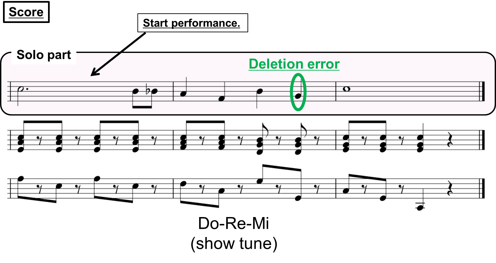
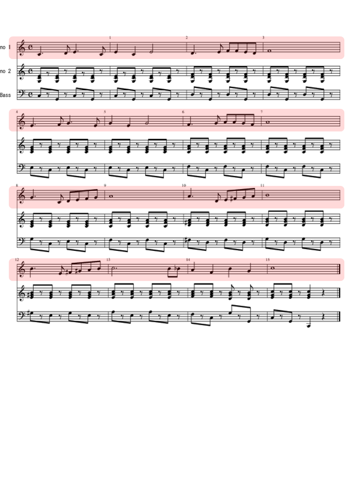

Acoustic Automatic Accompaniment System for Musical Performance with Errors and Arbitrary Repeats and Skips
We propose a system that can synchronize musical accompaniment automatically to a human performance with insertion/deletion/substitution errors and arbitrary repeats/skips in real time [1].
Accompanying to Human Performance during Practice
Accompanying to Human Performance with a Deletion Error

Accompanying to Human Performance with Repeats and Errors
- A repeat and tempo changes
- Some repeats
- Many errors and repeats in a short time (00:39 to end)
Whole Score: Do-Re-Mi
The parts highlighted in pink are played by the human, and the others are played by the proposed system.

References
- Tomohiko Nakamura, Eita Nakamura, and Shigeki Sagayama, “Real-time audio-to-score alignment of music performances containing errors and arbitrary repeats and skips,” IEEE/ACM Transactions on Audio, Speech, and Language Processing, vol. 24, no. 2, pp. 329–339, Feb. 2016. arXiv